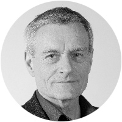
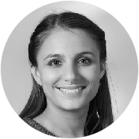

Fraktionspräsident
Michael Koechlin
Fraktionsgrösse
10, davon 1 Frau
Darüber hinaus ist das Thema Wohnen bei der LDP kein grosses Thema.
Kein spezifisches Thema bei der LDP im Grossen Rat.
Corinne Eymann
kaufmännische Angestellte, Frau des zurücktretenden Erziehungsdirektors Christoph Eymann
Alex Ebi
ehemaliger Profi-Handballer, RTV-Präsident
Fraktionspräsidentin
Andrea Knellwolf
Fraktionsgrösse
8, davon 4 Frauen
Ein zentrales Anliegen der CVP ist die Trennung zwischen Wohnraum und Gewerbegebiet. Darüber hinaus verlangt die CVP in einem Vorstoss, dass die gesetzlich festgelegte Maximalzahl von Stockwerken «moderat» angehoben wird, damit mehr in die Höhe gebaut werden kann und somit mehr Wohnungen entstehen können. Auch fordert die Partei für Private und Investoren ein schnelleres Baubewilligungsverfahren (alle Vorstösse noch nicht im Grossen Rat behandelt).
Die CVP fordert in einem vor kurzem eingereichten Vorstoss, dass es an jedem Primalschulstandort betreute Aufgabenhilfe gibt. Eltern sollen dadurch bei der Hausaufgabenhilfe ihres Kindes abends entlastet werden und die Familie so mehr Zeit für andere Sachen haben (noch nicht behandelt).
Die CVP brachte in einem Vorstoss ihre Sorge um die Zukunft der Plakatsammlung auf der Lyss zum Ausdruck. Ansonsten blieb die Fraktion in diesem Themengebiet eher passiv.
Oswald Inglin setzte sich im Grossen Rat immer wieder für die Wärmestube Soup & Chill ein (mal für eine Erhöhung der Subvention durch den Kanton, mal sollte der Kanton die Sicherheitskosten übernehmen.) Soziale Anliegen bringt auch Beatrice Isler regelmässig ins Parlament. Etwa, als sie sich Sorgen machte, wo Menschen ohne festen Wohnsitz mit einer Grippe in der Stadt Unterschlupf finden können.
Balz Herter
Betriebswirtschafter, ehemaliger Grossrat
Manuela Caroline Hobi
Juristin, Parteileitung CVP Basel-Stadt
Fraktionspräsident
Dieter Werthemann
Fraktionsgrösse
5, davon 2 Frauen
Die Grünliberalen verlangten eine Lockerung für das Gewerbe beim Verkehrskonzept Innenstadt (erfolgreich) und mehr Augenmass der Polizisten beim Verteilen von Bussen an Velofahrende bei Tramhaltestellen (nicht erfolgreich).
Die GLP knöpft sich in einer Motion die Kinderbetreuungskosten in Basel-Stadt vor (noch nicht im Grossen Rat behandelt). Sie will, dass die steuerliche Abzugsfähigkeit von Kinderbetreuungskosten in Basel-Stadt für den Mittelstand erhöht wird.
Die GLP verlangt in einem an die Regierung überwiesenem Vorstoss weniger Auflagen für Gastrobetriebe, die einmal pro Woche oder Monat ein kleines Konzert veranstalten möchten. Thema der GLP waren auch vereinfachte Zwischennutzungen. Ausserdem regte die Partei in einem weiteren Vorstoss die Schaffung von mehr Sitzbänken in der Innenstadt an. Mit Erfolg: Vor kurzem hat der Kanton gemeinsam mit Pro Innenstadt 150 Stühle in der Innenstadt verteilt. Die Geschäfte stellen die Stühle jeweils morgens raus und nehmen sie bei Ladenschluss wieder rein. Kostenpunkt: 93'000 Franken.
Soziale Anliegen waren in den letzten vier Jahren nicht wirklich auf dem Radar der GLP.
GLP-Grossrat Dieter Werthemann fordert in einer Motion eine Steuersenkung für den Mittelstand. Obwohl die Regierung vehement gegen die Motion war, muss sie nun auf Druck des Grossen Rates eine Vorlage dazu ausarbeiten.
Esther Keller
Autorin, ehemalige Telebasel-Moderatorin
Karl Linder
Unternehmer, Mitglied von Kulturstadt Jetzt.